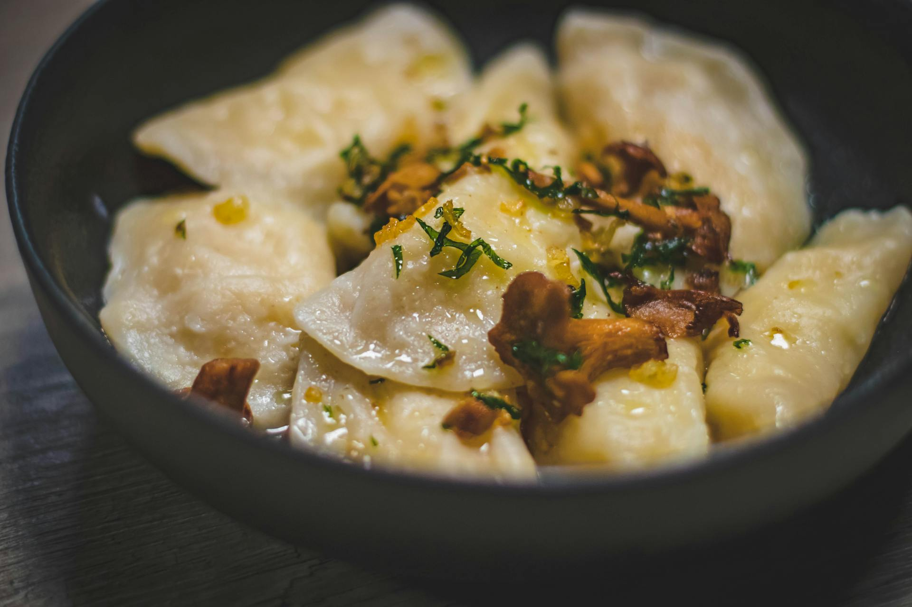

Welcome to our family run restaurant, where you can sample the very best Polish traditional cooking!
Opening Times:
Please note, that the restaurant is not open for bookings on Sundays

Situated in the heart of Clevedon, Don Polski has been serving delicious Polish food for over forty years. Jan Cebuka opened the restaurant in 1969. His aim was to serve the food of his beloved homeland to his fellow country men and to introduce his new homeland to the hearty taste of Polish food. Jan’s children Zosia and Pawel took over the running of the restaurant and have now handed over the reins to the next generation of the family, Pawel’s son, Tomek.